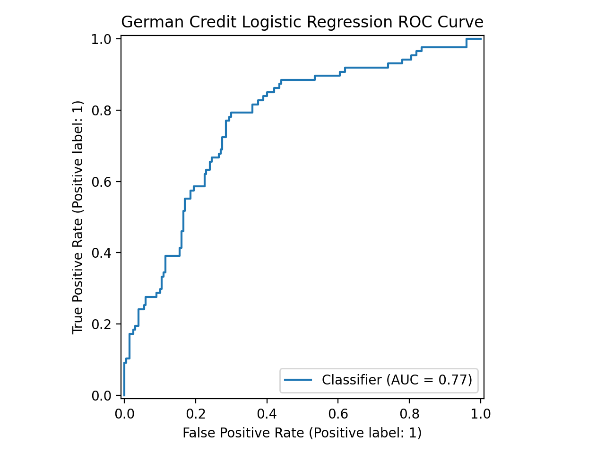

CS 432 Project Journal
Module 5 - Supervised Learning, Logistic Regression
Turning borrower traits into a probability of higher credit risk, and reading what raises or lowers the odds.
From an amount to a verdict
Linear regression in the previous module predicted a payment, but plenty of lending questions are really yes or no. Is this borrower more likely to be higher risk or lower risk. Logistic regression is built for that, and it does something neat under the hood that I will get to in a moment. For this one I switched datasets and used German Credit, because it ships with a direct credit risk label, which is a far cleaner fit for a two class problem than Lending Club's lopsided multi category outcome would have been.
I recoded the credit risk field so the lower risk borrowers became zero and the higher risk borrowers became one, then handed the model a mix of numeric fields and dummy coded categories covering age, credit amount, duration, monthly burden, sex, job, housing, and savings and checking account status. That came to seventeen predictors once the categories were expanded. Two prep steps mattered. I standardized the predictors so the model would not favor a variable just for being large, and because the lower risk group outnumbers the higher risk group by 665 to 289, I turned on class balancing so the smaller group would still get real attention during training rather than being shrugged off.
How it actually produces a probability
The part of logistic regression I find genuinely clever is that it does not spit out a probability directly. It first builds a weighted sum of the inputs, much like linear regression, but it calls that sum a log odds score. The fitted version looked like this.
logit = -0.223178 - 0.132098(age) - 0.048497(credit_amount) + 0.430740(duration) + 0.096852(credit_amount_per_month) - 0.313189(sex_male) + 0.080310(job_1) - 0.011492(job_2) + 0.051838(job_3) - 0.296041(housing_own) - 0.122248(housing_rent) - 0.025386(saving_moderate) - 0.157753(saving_quite_rich) - 0.245075(saving_rich) - 0.325157(saving_unknown) - 0.064336(checking_moderate) - 0.120401(checking_rich) - 0.749576(checking_unknown)
That score can be any number, positive or negative, so it then gets squeezed through the sigmoid function, which is just one over one plus e to the negative log odds. The sigmoid bends any value onto a smooth curve between zero and one, and that curved output is the probability. A result near one says the borrower probably belongs in the higher risk group, a result near zero says lower risk, and the model draws the line at one half. Watching that two step dance, a raw weighted sum folded into a clean probability, is the thing that made logistic regression finally click for me.
What raises the odds of higher risk
Coefficients on their own are hard to feel, so the odds ratios are the friendlier way to read this model. Loan duration came through as one of the clearest signals, with a positive coefficient and an odds ratio around 1.54, meaning longer loans were associated with meaningfully higher odds of landing in the higher risk group. The monthly burden feature pushed in the same direction, so heavier payments raised the estimated risk. Age leaned the other way, with older borrowers a little less likely to be flagged. The account fields added their own texture. An unknown checking account carried a strongly negative coefficient relative to the baseline, and owning a home or holding richer savings nudged the odds down as well, which says borrower context mattered alongside the raw loan numbers rather than instead of them.
How it scored, and a borrower run through it
On the test set the model reached about 69 percent accuracy, with precision near half, recall around 79 percent, an F1 score of 0.61, and an area under the ROC curve of 0.77. Recall is the figure I cared about most, since it tells me the model caught roughly four in five of the genuinely higher risk borrowers. Precision sitting lower is the flip side of that, meaning when it raised a flag it was right about half the time. The confusion matrix spells out the trade. It correctly placed 130 lower risk and 69 higher risk borrowers, while wrongly flagging 70 lower risk borrowers as risky and missing 18 risky ones. An area under the curve of 0.77 sits comfortably above the 0.50 you would get from coin flipping, so the model has real ability to tell the groups apart even if it is far from perfect.
I closed the loop by pushing one test borrower all the way through. A twenty nine year old with a credit amount near sixty nine hundred over thirty six months and a monthly burden around 191 produced a log odds score of 0.8807. Run that through the sigmoid and it becomes a 0.7070 probability of higher risk, which clears the one half threshold, so the model called this borrower higher risk. Their true label was indeed higher risk, so it got this one right, and seeing the full path from coefficients to log odds to probability to verdict made the whole machine feel a lot less like a black box. This was also the module where the recall against precision tension first became real for me, a thread that runs through every classifier still to come.
